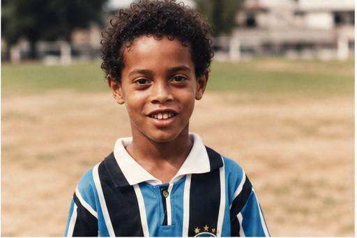
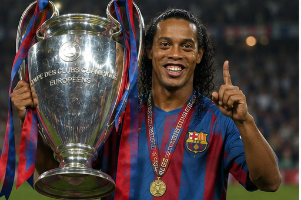
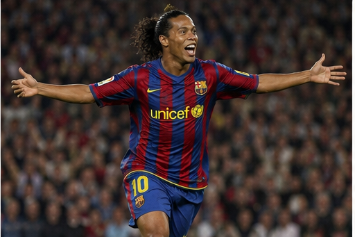
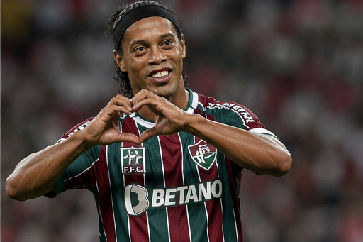
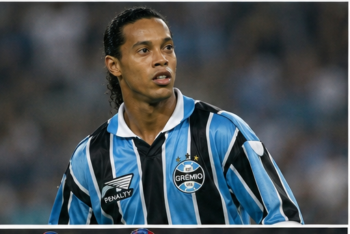

Ronaldinho is one of football's most entertaining and gifted players of all time. Known for his dazzling skills, joyful style of play, and unforgettable smile, he inspired millions with his creativity and passion for the game. From the streets of Porto Alegre to becoming a World Cup winner and Ballon d'Or recipient, Ronaldinho's career remains one of football's most magical journeys.

Ronaldo de Assis Moreira, better known as Ronaldinho, was born on 21 March 1980 in Porto Alegre, Brazil. He grew up in a football-loving family, with his older brother Roberto also playing professionally. Ronaldinho displayed incredible talent from a young age, spending countless hours playing street football and futsal, where he developed the creativity and close ball control that would define his career.

Ronaldinho joined Grêmio's youth academy, where his exceptional dribbling, vision, and technical ability quickly stood out. His performances in youth competitions attracted international attention, and many believed he would become one of Brazil's next great football stars.

Ronaldinho made his professional debut for Grêmio in 1998. His flair, pace, and spectacular skills immediately made him one of Brazil's brightest young talents. After impressing in domestic competitions, he earned a move to Europe, where his career reached legendary heights.

After playing for Grêmio, Ronaldinho joined Paris Saint-Germain before moving to FC Barcelona in 2003. At Barcelona, he became one of the world's greatest players, helping the club win two La Liga titles and the UEFA Champions League. Later, he played for AC Milan before returning to Brazil with Flamengo, Atlético Mineiro, Fluminense, and eventually Querétaro in Mexico. Wherever he played, he entertained fans with unforgettable moments of brilliance.

Ronaldinho represented Brazil with distinction, winning the 1999 Copa América, the 2002 FIFA World Cup, and the 2005 FIFA Confederations Cup. As part of Brazil's famous attacking trio alongside Ronaldo and Rivaldo, he played a key role in their World Cup triumph and became known for his spectacular goals, assists, and joyful football.
Ronaldinho was famous for his incredible dribbling, breathtaking tricks, no-look passes, free kicks, elasticos, and outstanding creativity. His ability to entertain while remaining highly effective made him one of the most beloved footballers ever. His smile, confidence, and passion for the game earned him the nickname "The Magician."
Ronaldinho is remembered as one of football's greatest entertainers. His creativity, flair, sportsmanship, and infectious smile inspired an entire generation of players. Many modern stars credit Ronaldinho as their biggest inspiration, and his magical moments continue to be celebrated by football fans around the world.
"I learned all about life with a ball at my feet." — Ronaldinho